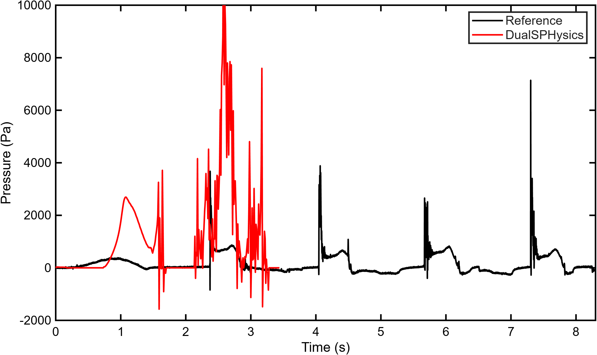

Sloshing Tank¶
Under review by Bonaventura Tagliafierro
This example demonstrates sloshing in a partially filled rectangular tank, with impact loads on the walls that are of practical interest in ship, tank-truck and LNG-carrier design. In the laboratory, the tank undergoes prescribed roll motion about the centre of its bottom line. In this numerical case, the computational tank geometry remains fixed and the fluid receives time-dependent acceleration through accinput. The calculation uses a tank-attached, non-inertial reference frame to represent the laboratory forcing.
The benchmark is supplied at DualSPHysics_v6.0/examples/benchmarks/02_Sloshing. The selected condition is the low-fill water experiment from SPHERIC Benchmark Test 10, with lateral impact pressure at sensor 1 as a function of time as the comparison target. The XML and BAT are provisional until the release configuration is frozen; the preliminary pressure figure below does not establish final validation.
What's Covered in This Tutorial
This case demonstrates the following DualSPHysics capabilities:
- A finite-width, 3-D partially filled tank built using
drawboxandfillbox - Fixed computational boundaries with prescribed fluid acceleration from a CSV file
- mDBC boundary treatment with the selected slip and no-penetration settings
- Pressure interpolation at the experimental lateral sensor location
- A comparison workflow using the selected SPHERIC water-pressure history
Video: To be updated for the approved benchmark configuration.
Case Configuration¶
Physical Setup¶
The nominal geometry and initial water filling are:
- Tank: 0.900 m long, 0.062 m wide and 0.508 m high, closed on all faces.
- Water column: 0.900 m long, spanning the tank width, with nominal initial water height 0.093 m.
- Particle spacing: \(dp=0.002\) m (2 mm).
- Coordinates: \(x\) is longitudinal, \(y\) spans the tank width and \(z\) is vertical. The origin is at the bottom centre, with the floor at \(z=0\).
Local fluid label mkfluid=0 identifies the water, and local boundary label mkbound=0 identifies the fixed tank. These are the labels used by the case definition; generated particle-marker values are not assumed here. The finite \(y\) extent and nonzero generation width make this a 3-D numerical case, even though sensor 1 and the diagnostic gauge lie in the central longitudinal plane.
Geometry Definition¶
Domain Setup¶
The variables in case/casedef/geometry/predefinition define nominal dimensions, grid placement and run duration:
<predefinition>
<newvarcte Dp="0.002" />
<newvarcte Dpm="Dp/2" />
<newvarcte waterHeight="0.093" _rem="Water level (from the floor)" />
<newvarcte waterLength="0.900" _rem="Water column length" />
<newvarcte timeMax="8.30" />
<newvarcte timeOut="0.01" />
<!-- Nominal tank -->
<newvarcte domainDown="-0.450" />
<newvarcte domainUp="0.450" />
<newvarcte domainWidthY="0.062" />
<newvarcte domainHeight="0.508" />
<!-- Gauge positions -->
<newvarcte H1x="-0.4" />
<!-- Real surfaces (hdp) rounded to grid faces -->
<newvarcte Tankpx1="domainDown" Tankpx2="domainDown+floor((domainUp-domainDown)/Dp+0.5)*Dp" />
<newvarcte Tankpy1="-domainWidthY/2" Tankpy2="Tankpy1+floor(domainWidthY/Dp+0.5)*Dp" />
<newvarcte Tankpz1="0" Tankpz2="floor(domainHeight/Dp+0.5)*Dp" />
<newvarcte WaterLengthR="floor(waterLength/Dp+0.5)*Dp" WaterHeightR="floor(waterHeight/Dp+0.5)*Dp" _rem="Water represented by whole rows of particles" />
<!-- Particle grid with nodes at Dp/2 -->
<newvarcte PminX="Tankpx1-Dpm-10*Dp" PminY="Tankpy1-Dpm-10*Dp" PminZ="Tankpz1-Dpm-10*Dp" />
<newvarcte PmaxX="Tankpx2+Dpm+10*Dp" PmaxY="Tankpy2+Dpm+10*Dp" PmaxZ="Tankpz2+Dpm+20*Dp" />
</predefinition>
Particle spacing and grid coordinates: Dp=0.002 and Dpm=Dp/2 retain the resolution and half-spacing. Tankpx*, Tankpy* and Tankpz* describe the tank surfaces using the source's rounding expressions. Nominal limits are \(x=-0.450\) to 0.450 m, \(y=-0.031\) to 0.031 m and \(z=0\) to 0.508 m. WaterHeightR is a separate grid-rounded reference used by the diagnostic gauge; it is not a replacement value for the waterHeight entry in the fluid-filling command.
The particle-generation definition is:
<definition dp="#Dp">
<pointref x="#PminX" y="#PminY" z="#PminZ" comment="Origin of the particle grid: same as pointmin" />
<pointmin x="#PminX" y="#PminY" z="#PminZ" />
<pointmax x="#PmaxX" y="#PmaxY" z="#PmaxZ" />
</definition>
Generation bounds: The Pmin* and Pmax* expressions provide space around the closed tank for its boundary layers. The reference point fixes the particle grid at the same origin as these generation bounds. These are GenCase drawing limits; the solver's simulation domain is configured separately below.
Tank Boundaries¶
The main drawing list first prepares the normal geometry and then generates particles:
<!-- Actual geometry for normals -->
<runlist name="GeometryForNormals" />
<!-- Particle generation -->
<setactive drawpoints="1" drawshapes="0" />
<setshapemode>actual | bound</setshapemode>
<setdrawmode mode="full" />
<!-- Tank mk=0 -->
<setmkbound mk="0" />
<drawbox>
<boxfill>all</boxfill>
<point x="#Tankpx1-Dpm" y="#Tankpy1-Dpm" z="#Tankpz1-Dpm" />
<endpoint x="#Tankpx2+Dpm" y="#Tankpy2+Dpm" z="#Tankpz2+Dpm" />
<layers vdp="0,1,2,3,4,5" />
</drawbox>
<shapeout file="tank" />
Boundary marker: setmkbound mk="0" selects local boundary label 0 for the tank.
Closed surfaces: boxfill=all creates all six faces: floor, roof and four walls. The particle-drawing box uses half-spacing offsets around the nominal surfaces and the exact layer list 0,1,2,3,4,5. shapeout file="tank" exports the tank shape for inspection.
The GeometryForNormals list called above is:
<list name="GeometryForNormals">
<setactive drawpoints="0" drawshapes="1" />
<setshapemode>actual | bound</setshapemode>
<setfrdrawmode auto="false" />
<!-- Tank mk=0 -->
<setmkbound mk="0" />
<setnormalinvert invert="true" />
<drawbox>
<boxfill>all</boxfill>
<point x="#Tankpx1" y="#Tankpy1" z="#Tankpz1" />
<endpoint x="#Tankpx2" y="#Tankpy2" z="#Tankpz2" />
</drawbox>
<setnormalinvert invert="false" />
<shapeout file="hdp" />
<resetdraw />
</list>
<normals>
<distanceh value="3.0" comment="Maximum distance (H*distanceh) to compute normals data (default=2)" />
<geometryfile file="[CaseName]_hdp_Actual.vtk" comment="File with boundary geometry (VTK format). Use NONE to ignore it." />
</normals>
This pass draws shapes with particle generation disabled, uses inverted normals for the interior of the tank and exports the hdp geometry. The normal calculation references [CaseName]_hdp_Actual.vtk and a maximum distance of \(3h\). [CaseName] is the source's preprocessing placeholder. The geometry and its boundaries remain fixed throughout this numerical case.
Water Column¶
<setmkfluid mk="0" />
<fillbox x="#Tankpx1+Dpm+5*Dp" y="#Tankpy1+Dpm+5*Dp" z="#Tankpz1+Dpm+2*Dp">
<modefill>void</modefill>
<point x="#domainDown-2*Dp" y="#Tankpy1-Dp" z="#Tankpz1-Dp" />
<size x="#waterLength+4*Dp" y="#domainWidthY+2*Dp" z="#waterHeight" />
</fillbox>
Marker assignment: setmkfluid mk="0" selects the water for this filling operation and for the acceleration input described below.
Void fill mode: modefill=void fills the available region from a seed point inside the tank. The seed coordinates are defined relative to the tank surfaces, Dpm and Dp; the filling-box point and size retain the source's particle-grid allowances.
Initial filling: waterHeight=0.093 m specifies the nominal low-fill condition. The actual particle locations follow the displayed filling bounds and lattice. No imposed initial velocity, floating-body or prescribed boundary-motion block is configured.
The physical and numerical scales are supplied by:
<constantsdef>
<gravity x="0" y="0" z="-9.81" comment="Gravitational acceleration" units_comment="m/s^2" />
<rhop0 value="998" comment="Reference density of the fluid" units_comment="kg/m^3" />
<rhopgradient value="3" comment="Initial density gradient 1:Rhop0, 2:Water column, 3:Max. water height (default=2)" />
<hswl value="0" auto="true" comment="Maximum still water level to calculate speedofsound using coefsound" units_comment="metres (m)" />
<gamma value="7" comment="Polytropic constant for water used in the state equation" />
<speedsystem value="0" auto="true" comment="Maximum system speed (by default the dam-break propagation is used)" />
<coefsound value="20" comment="Coefficient to multiply speedsystem" />
<speedsound value="0" auto="true" comment="Speed of sound to use in the simulation (by default speedofsound=coefsound*speedsystem)" />
<coefh value="1.30" comment="Coefficient to calculate the smoothing length (h=coefh*sqrt(3*dp^2) in 3D)" />
<cflnumber value="0.2" comment="Coefficient to multiply dt" />
</constantsdef>
The reference water density is 998 kg/m³ and the configured gravity vector is \((0,0,-9.81)\) m/s². rhopgradient=3 selects the initial density gradient based on maximum water height. Entries with auto="true" request calculated values; coefsound=20, coefh=1.30, gamma=7 and cflnumber=0.2 retain the case's chosen scales. Gravity is also accounted for in the prescribed acceleration history, as explained next.
Acceleration Input¶
The forcing is defined under case/execution/special:
<accinputs>
<accinput mkfluid="0">
<acccentre x="0.0" y="0" z="0.0" comment="Center of acceleration" units_comment="metres (m)" />
<globalgravity value="0" comment="Global gravity enabled (1) or disabled (0)" />
<acctimesfile value="SloshingAccData.csv" comment="File with linear and angular acceleration data" />
</accinput>
</accinputs>
Selected fluid and acceleration centre: accinput mkfluid="0" applies the prescribed acceleration to the water. The centre is \((0,0,0)\), at the bottom centre of the tank. The physical laboratory motion is represented in this reference frame while the computational boundary particles stay fixed.
Gravity treatment: globalgravity=0 disables adding the ordinary global-gravity contribution to the selected fluid on top of the input acceleration. It does not mean gravity is physically absent. The CSV's linear components already contain the gravity projections in the tank frame; its initial vertical component is −9.81 m/s².
Reference-frame acceleration: The input implementation accounts for prescribed linear acceleration and the applicable angular-acceleration, rotation-rate and Coriolis terms about the specified centre. It obtains velocity histories from the supplied accelerations for these calculations. This describes the configured forcing mechanism, rather than an accuracy equivalence with another numerical formulation.
Acceleration History¶
SloshingAccData.csv contains a semicolon-separated header and 167,001 numerical records, covering 0–8.35 s. The simulation uses the interval up to its configured end at 8.30 s. The file begins:
#Time;LinearAccX;LinearAccY;LinearAccZ;AngularAccX;AngularAccY;AngularAccZ
0;-0;0;-9.81;0;0.312057592;0
5e-05;-3.82749831e-09;0;-9.81;0;0.312275881;0
0.0001;-1.53135626e-08;0;-9.81;0;0.312494169;0
| Column | Quantity | Units |
|---|---|---|
Time |
Time in the prescribed history | s |
LinearAccX, LinearAccY, LinearAccZ |
Linear acceleration components in the computational frame | m/s² |
AngularAccX, AngularAccY, AngularAccZ |
Angular acceleration components | rad/s² |
The supplied history has nonzero linear \(x/z\) and angular \(y\) components; linear \(y\) and angular \(x/z\) are zero. Its times match reference/SPHERIC_TestCase10/data_files/lateral_water_1x.txt. Angular \(y\) acceleration corresponds to the experimental angular acceleration converted from degrees/s² to radians/s². The linear \(x/z\) components correspond to gravity projected using the reference's smoothed angle history. Keep the supplied CSV alongside the XML; the calculation reads it as the prescribed input rather than generating a motion history from the XML.
Numerical Parameters¶
Boundary Treatment¶
<parameter key="Boundary" value="mDBC" comment="Boundary method: DBC, mDBC, MIX:MixBC (default=DBC)" />
<parameter key="SlipMode" value="V0" comment="Slip mode for mDBC: NS:No-slip, FS:Free slip, V0:TanVel=0, M22:mDBC 2022 (default=NS)" />
<parameter key="NoPenetration" value="Y" comment="Activate No-Penetration option for mDBC: Y/N (default=N)" />
This benchmark selects mDBC, SlipMode=V0 (zero tangential velocity) and NoPenetration=Y for the fixed tank. These are the choices made by this XML, rather than a statement about the built-in default of every executable.
Time Integration¶
<parameter key="StepAlgorithm" value="SYM" comment="Step Algorithm: SYM:Symplectic, VER:Verlet (default=SYM)" />
<parameter key="VerletSteps" value="40" comment="Verlet only: Number of steps to apply Euler timestepping (default=40)" />
<parameter key="CoefDtMin" value="0.001" comment="Coefficient to calculate minimum time step dtmin=coefdtmin*h/speedsound (default=0.05)" />
<parameter key="DtIni" value="#2*Dp/1500" comment="Initial time step. Use 0 to default use (default=h/speedsound)" units_comment="seconds" />
<parameter key="DtMin" value="0" comment="Minimum time step. Use 0 to default use (default=coefdtmin*h/speedsound)" units_comment="seconds" />
<parameter key="DtFixed" value="0" comment="Fixed Dt value. Use 0 to disable (default=disabled)" units_comment="seconds" />
<parameter key="DtFixedFile" value="NONE" comment="Dt values are loaded from file. Use NONE to disable (default=disabled)" units_comment="milliseconds (ms)" />
<parameter key="DtAllParticles" value="N" comment="Velocity of all the particles is used to calculate DT. Y:All, N:Only fluid/floating (default=N)" />
Symplectic integration is selected by SYM. VerletSteps=40 is a Verlet-only companion setting and does not control this selected scheme. CoefDtMin=0.001 supplies the minimum-step coefficient when the default minimum is used. The source expression for DtIni is retained, and fixed time stepping is disabled by DtFixed=0 and DtFixedFile=NONE.
Kernel and Viscosity¶
<parameter key="Kernel" value="WC2" comment="Interaction Kernel: WC2:WendlandC2, WC6:WendlandC6 (default=WC2)" />
<parameter key="ViscoTreatment" value="ART" comment="Viscosity formulation: LAM:Laminar, ART:Artificial (default=LAM)" />
<parameter key="Visco" value="#1e-6*10/(CoefSound*H)" comment="Viscosity value. Typically 0.01 for Artificial and 1e-6 m^2/s (water kinematic viscosity) for Laminar" />
<parameter key="ViscoBoundFactor" value="1" comment="Multiply viscosity value with boundary (default=1)" />
<parameter key="Turbulence" value="NO" comment="Turbulence model: NO:None, SPS:Sub-particle scale (default=NO)" />
- Wendland C2 (
WC2) is used for particle interactions. - Artificial viscosity (
ART) uses the expression#1e-6*10/(CoefSound*H), evaluated during case preparation. The expression is retained verbatim; no generated coefficient is assumed. - Boundary viscosity factor is 1.
- Turbulence model is
NO.
Density Diffusion and Shifting¶
<parameter key="DensityDT" value="FO" comment="Density Diffusion Term: NO:None, FO:Fourtakas (default=NO)" />
<parameter key="DensityDTvalue" value="0.10" comment="DDT value (default=0.1)" />
<parameter key="DivCleanKp" value="0" comment="Divergence cleaning local speed of sound factor (0:Inactive, >0:Active)" />
<parameter key="Shifting" value="1" comment="Shifting mode 0:None, 1:Ignore bound, 2:Ignore fixed, 3:Full, 4:Full advanced (default=0)" />
<parameter key="ShiftCoef" value="-2" comment="Coefficient for standard shifting computation (default=-2)" />
<parameter key="ShiftTFS" value="2.75" comment="Threshold to detect free surface. Typically 1.5 for 2D and 2.75 for 3D (default=0)" />
<parameter key="ShiftAdvCoef" value="-0.01" comment="Coefficient for advanced shifting computation (default=-0.01)" />
<parameter key="ShiftAdvALE" value="N" comment="ALE formulation for advanced shifting: Y/N (default=N)" />
<parameter key="ShiftAdvNCPress" value="N" comment="Non conservative pressure formulation for advanced shifting: Y/N (default=N)" />
FO selects Fourtakas density diffusion with coefficient 0.10; see Fourtakas et al. (2019). The case uses standard shifting mode 1, labelled “Ignore bound”, with ShiftCoef=-2 and ShiftTFS=2.75. The ShiftAdv* entries are companion parameters for advanced shifting, which is not selected. DivCleanKp=0 leaves divergence cleaning inactive.
Simulation Domain¶
<simulationdomain comment="Defines domain of simulation (default=Uses minimum and maximum position of the generated particles)">
<posmin x="default" y="default" z="default" comment="e.g.: x=0.5, y=default-1, z=default-10%" />
<posmax x="default" y="default" z="default" />
</simulationdomain>
The solver uses the bounds derived from the generated particles. No explicit zero-width \(y\) domain is set: the finite-width tank is represented in three dimensions and stays fixed in the computational frame.
Simulation Time and Output¶
<parameter key="SavePosDouble" value="Y" comment="Saves particle position using double precision: Y/N (default=N)" />
<parameter key="SaveExtraParts" value="0" comment="Part interval or list for saving extra data for restart option (default=0)" />
<parameter key="TimeMax" value="#timeMax" comment="Time of simulation" units_comment="seconds" />
<parameter key="TimeOut" value="#timeOut" comment="Time out data" units_comment="seconds" />
<parameter key="TimeOutExtra" value="0.05" />
<parameter key="RhopOutMin" value="700" comment="Minimum density valid (default=700)" units_comment="kg/m^3" />
<parameter key="RhopOutMax" value="1300" comment="Maximum density valid (default=1300)" units_comment="kg/m^3" />
<parameter key="WrnPartsOut" value="Y" comment="Active warning according to number of out particles: Y/N (default=Y)" />
<parameter key="MinFluidStop" value="0" comment="Minimum proportion of initial fluid particles to continue the simulation 0:Never stops, 0.1:Stops when fluid drops to 10%. (default=0)" />
#timeMax and #timeOut evaluate to 8.30 s and 0.01 s. Positions are saved with double precision. The source also supplies TimeOutExtra=0.05 and separately sets SaveExtraParts=0; these entries do not replace the main output interval. The valid density range is 700–1300 kg/m³, particle-loss warnings are enabled and MinFluidStop=0 disables stopping at a specified remaining-fluid proportion. The floating-body settings in the source do not introduce a moving tank or a floating object into this case.
Diagnostic Water-Level Gauge¶
The XML defines one additional SWL diagnostic, H1:
<gauges>
<default>
<savevtkpart value="false" comment="Creates VTK files for each PART (default=false)" />
<computedt value="0.01" comment="Time between measurements. 0:all steps (default=TimeOut)" units_comment="s" />
<output value="true" comment="Creates CSV files of measurements (default=false)" />
<outputdt value="0.01" comment="Time between output measurements. 0:all steps (default=TimeOut)" units_comment="s" />
</default>
<swl name="H1">
<pointdp coefdp="0.05" comment="Distance between check points (value=coefdp*dp)" />
<point0 x="#H1x" y="0" z="#WaterHeightR-10*Dp" comment="Initial point" units_comment="m" />
<point2 x="#H1x" y="0" z="#WaterHeightR+10*Dp" comment="Final point" units_comment="m" />
</swl>
</gauges>
It samples a vertical line at \(x=-0.4\) m, \(y=0\), centred on WaterHeightR. The defined rounding gives WaterHeightR=0.094 m, so its endpoints are \(z=0.074\) and 0.114 m, with checking distance 0.05×Dp=0.0001 m. Computation and CSV output are requested every 0.01 s, with per-PART VTK output disabled. This is a diagnostic of the numerical flow; the agreed experimental comparison remains lateral pressure at sensor 1.
General XML organisation and parameter syntax are covered by the XML Configuration guide.
Running the Simulation¶
Input Files and Expected Outputs¶
| Source | Purpose |
|---|---|
SloshingAcc_Def.xml |
Fixed tank geometry, prescribed fluid acceleration, diagnostic gauge and numerical settings. |
SloshingAccData.csv |
Linear and angular acceleration history read by the solver. |
wSloshingAcc_win64_GPU.bat |
Current Windows GPU preparation, execution and pressure post-processing sequence. |
reference/SPHERIC_TestCase10/data_files/lateral_water_1x.txt |
Selected experimental pressure and laboratory motion history. |
reference/SPHERIC_TestCase10/SOUTOIGLESIAS_BOTIA_SPHERIC_TESTCASE10_IMPACT_PRESSURE.pdf |
Experimental tank, sensor and test-condition description. |
The script uses the following output structure:
SloshingAcc_out/
├── data/ Solver data supplied to the measurement tool
└── measure/ MeasureTool pressure-output prefix
GenCase and the solver also use SloshingAcc_out/ itself. Existing numerical output is available, but output availability is distinct from successful completion and scientific validation of the current configuration.
Windows¶
From the benchmark folder, the current GPU script is wSloshingAcc_win64_GPU.bat. Its case and selected executable assignments are:
rem Defines the case name and output directories.
set name=SloshingAcc
set dirout=%name%_out
set diroutdata=%dirout%\data
The active preparation and solver calls are:
rem Executes GenCase to create initial files for simulation.
%gencase% %name%_Def %dirout%/%name% -save:all
if not "%ERRORLEVEL%" == "0" goto fail
rem Executes DualSPHysics to run the SPH simulation.
%dualsphysicsgpu% -gpu %dirout%/%name% %dirout%
if not "%ERRORLEVEL%" == "0" goto fail
GenCase reads SloshingAcc_Def and writes the prepared case with prefix SloshingAcc_out/SloshingAcc. The GPU solver reads that prefix and writes to SloshingAcc_out. The BAT checks each return code before continuing.
The existing-output menu offers deletion and rerun, post-processing only, or abort. Retain any existing results deliberately when choosing an option.
Final Release Platforms¶
The final package is expected to provide Windows GPU/CPU and Linux GPU/CPU execution scripts. Only the existing Windows GPU BAT is currently verified; final CPU/Linux filenames and commands remain subject to packaging confirmation.
Pressure Post-Processing¶
The active BAT sequence includes the following MeasureTool pressure calculation before the final IsoSurface export:
:postprocessing
rem Executes PartVTK to create VTK files with fluid particles.
set dirout2=%dirout%\particles
%partvtk% -dirdata %diroutdata% -savevtk %dirout2%/PartFluid -onlytype:-all,+fluid -continue:1
if not "%ERRORLEVEL%" == "0" goto fail
rem Executes PartVTKOut to create VTK files with excluded particles.
%partvtkout% -dirdata %diroutdata% -savevtk %dirout2%/PartFluidOut -SaveResume %dirout2%/_ResumeFluidOut
if not "%ERRORLEVEL%" == "0" goto fail
rem Executes MeasureTool to export the selected measurements to CSV files.
set dirout2=%dirout%\measure
%measuretool% -dirdata %diroutdata% -pointsdef:pt=-0.450:0:0.093 -onlytype:-all,+fluid -vars:-all,+press -kcusedummy:0 -kclimit:0.01 -savecsv %dirout2%/Pressure
if not "%ERRORLEVEL%" == "0" goto fail
This is the literal MeasureTool command in the current BAT, using -dirdata and the measure/Pressure output prefix. Active PartVTK and PartVTKOut operations precede it and export fluid and excluded-particle data; the active IsoSurface stage follows it and requests a 3-D isosurface.
Sampling position: -pointsdef:pt=-0.450:0:0.093 defines sensor 1 at \((x,y,z)=(-0.450,0,0.093)\) m. It is on the left lateral wall, 93 mm above the bottom, consistent with the low-fill sensor position in Figure 1 of the SPHERIC reference. The numerical position is fixed in the computational tank frame.
Particle and quantity selection: -onlytype:-all,+fluid excludes every particle type and then includes fluid particles. -vars:-all,+press deselects all quantities and then requests pressure interpolation. -kclimit:0.01 sets the minimum kernel sum sum_wab_vol for applying kernel correction, while -kcusedummy:0 disables use of its dummy value when correction is not applied.
The configured pressure output prefix is SloshingAcc_out/measure/Pressure. Verify the actual CSV headers, units and usable time extent before the final comparison.
The final active surface-export block in wSloshingAcc_win64_GPU.bat is:
rem Executes IsoSurface to create VTK files with fluid surfaces or slices.
set dirout2=%dirout%\surface
%isosurface% -dirdata %diroutdata% -saveiso %dirout2%/Surface
if not "%ERRORLEVEL%" == "0" goto fail
It reads %diroutdata% (SloshingAcc_out/data) and writes the surface/Surface prefix under the same case output directory. The return-code check precedes :success; static inspection does not establish successful execution.
Results and Validation¶
Experimental Reference¶
The selected dataset is reference/SPHERIC_TestCase10/data_files/lateral_water_1x.txt. It contains the following columns:
| Column | Experimental quantity | Units |
|---|---|---|
| 1 | Time | s |
| 2 | Lateral pressure at sensor 1 | mbar |
| 3 | Smoothed roll-angle history | degrees |
| 4 | Angular velocity | degrees/s |
| 5 | Angular acceleration | degrees/s² |
| 6 | Original angle history | degrees |
The reference folder also contains other experimental conditions and repeatability peak datasets. Those peak datasets contain first-to-fourth impact values, not complete pressure histories; they are not substituted for the selected lateral-water time series.
For a comparison in Pa, 1 mbar = 100 Pa. Numerical and experimental quantities must use consistent units and pressure/time conventions. No arbitrary time shift or modification of the experimental data is prescribed.
Preliminary Pressure Comparison¶
Figure 1 is the updated preliminary lateral-pressure comparison, with Reference and DualSPHysics curves, superseding the earlier REF/ART/LAM alternatives. Generated metadata agrees with the inspected ART, mDBC/V0, 0.002 m spacing and 8.3 s requested duration. This does not establish PNG provenance or runtime completion; the plotted numerical curve covers only part of the displayed experimental interval.

Preliminary figure. The numerical results and their comparison with the reference data are pending final verification.
Open the unchanged image at full resolution to inspect its labels. The definitive numerical-versus-experimental pressure comparison and the approved-configuration video remain pending.
References¶
- SPHERIC Benchmark Test 10 – Sloshing impact pressures, coordinated by A. Souto-Iglesias and E. Botia-Vera. Test description and experimental data. The selected local history is
reference/SPHERIC_TestCase10/data_files/lateral_water_1x.txt. - Fourtakas G, Domínguez JM, Vacondio R, Rogers BD. 2019. Local Uniform Stencil (LUST) boundary condition for arbitrary 3-D boundaries in parallel smoothed particle hydrodynamics (SPH) models. Computers & Fluids, 190: 346–361. doi:10.1016/j.compfluid.2019.06.009.